Discover India
A civilization of ancient roots and modern ambition — a land that helped shape zero, gave the world yoga and chess, reached Mars on its first attempt, and serves free meals to thousands every day.
scroll
A civilization of ancient roots and modern ambition — a land that helped shape zero, gave the world yoga and chess, reached Mars on its first attempt, and serves free meals to thousands every day.


In 2023, Chandrayaan-3 made India the first country to soft-land near the Moon's south polar region.

Mangalyaan reached Mars orbit on India's first attempt, a landmark low-cost interplanetary mission.

Sushruta's texts described rhinoplasty, cataract techniques, and over 120 surgical instruments — over 2,000 years ago.
One of the world's oldest living medical traditions. Charaka's text even described the genetic basis of disease using seed-and-part theory.
Indian students built KalamSat, a 64-gram experimental space payload — lighter than a tennis ball.
Charaka Samhita classified pathogenic vs non-pathogenic microbes and described communicable disease transmission — centuries before microscopes.
India developed zero as a numeral and the decimal place-value system — then transmitted to Europe via Arab scholars as "Arabic" numerals.
The Sulbasutras (8th–6th c. BCE) gave a geometric statement of the Pythagorean theorem centuries before Euclid formalized it.
The "Human Computer" multiplied two 13-digit numbers in her head in just 28 seconds.
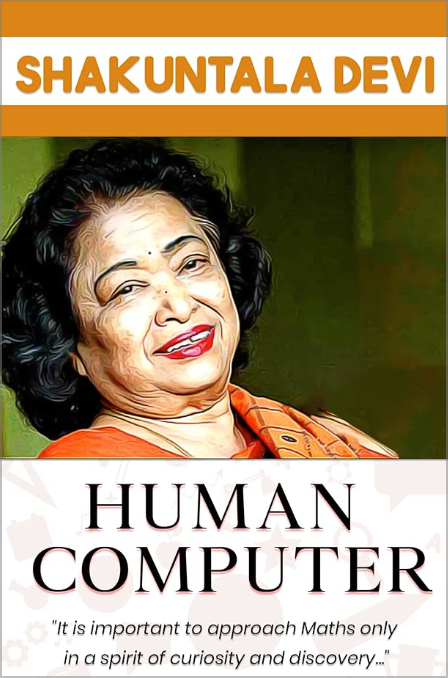
Aryabhata gave π ≈ 3.1416 in the 5th century — and humbly noted it was "approximate."
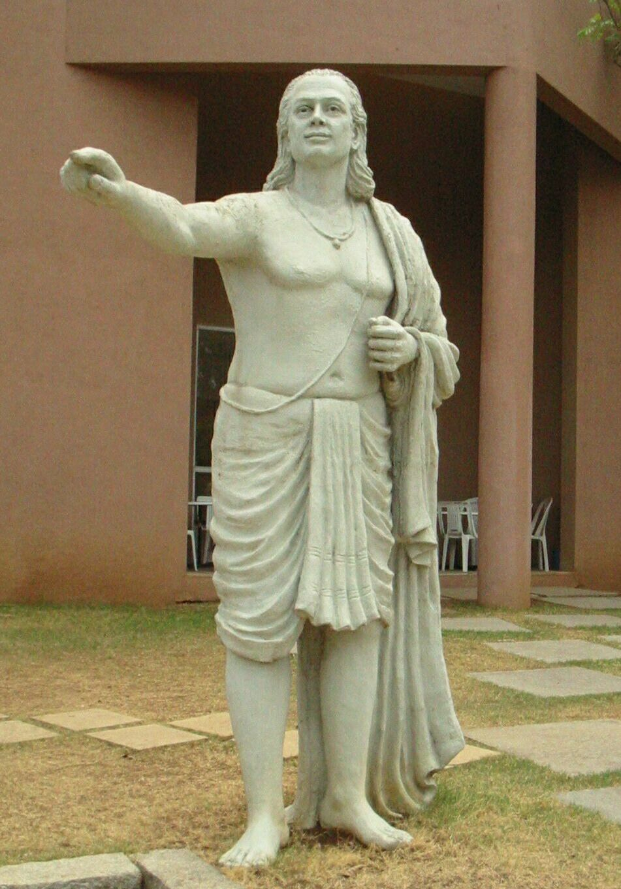
Madhava (c. 1340–1425) discovered power series for sine, cosine, and π — predating Newton and Leibniz by ~250 years.
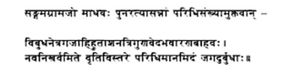
Brahmagupta (598 CE) boldly introduced negative numbers and defined division by zero as "khacheda" — the infinite.
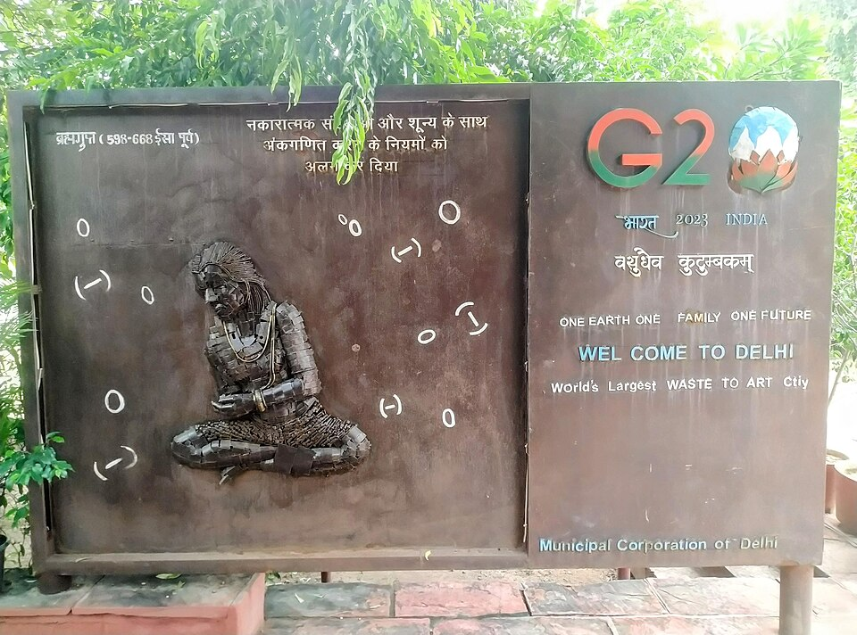
India has one of the world's largest and most multilingual newspaper ecosystems.
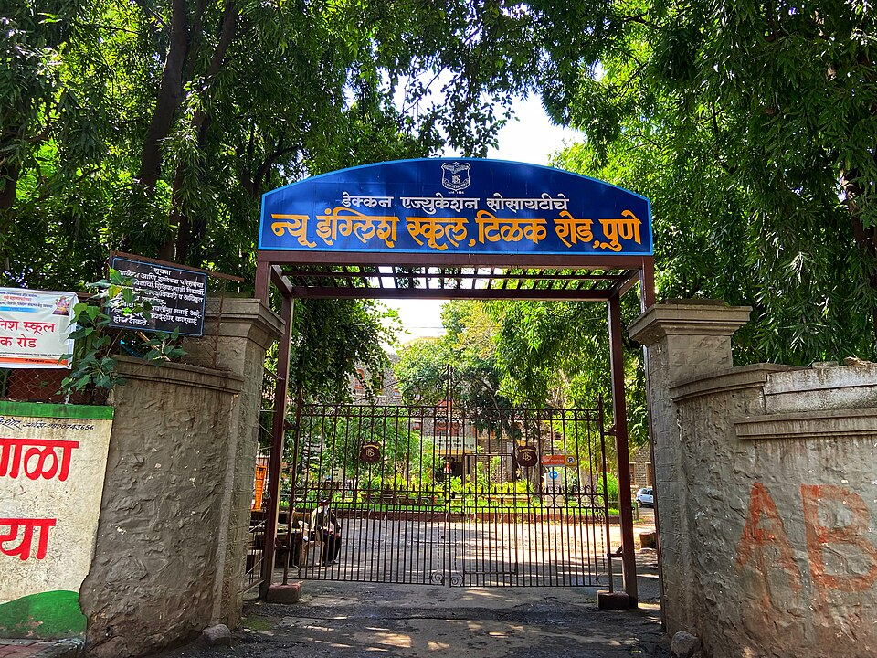
India's Census recorded 121 languages and 270 mother tongues, with 22 scheduled languages.
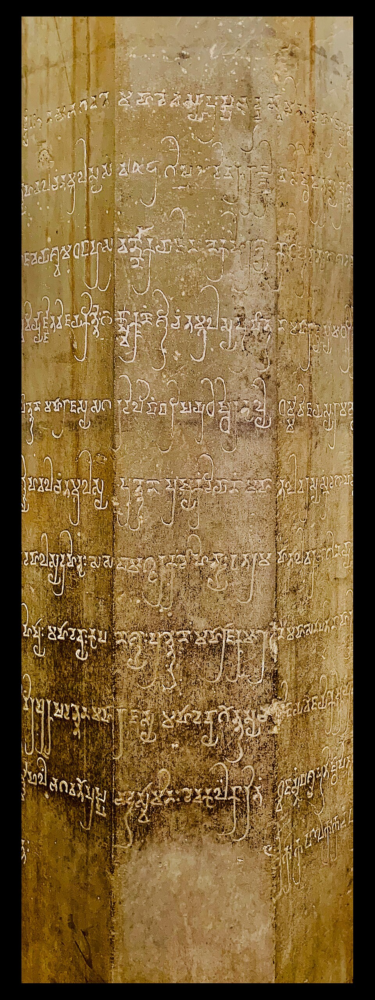
India has over 100 million English speakers, mostly as a second or third language.
Panini's grammar (4th c. BCE) is one of the world's most sophisticated formal linguistic systems — studied by modern computational linguists.
Chess traces its roots to India's chaturanga, played by the 6th–7th century CE.

Evolved from Indian moral board-game traditions such as Moksha Patam.
An ancient Indian discipline and UNESCO-recognized intangible cultural heritage.

India's ancient martial tradition from Kerala — one of the world's oldest fighting systems.
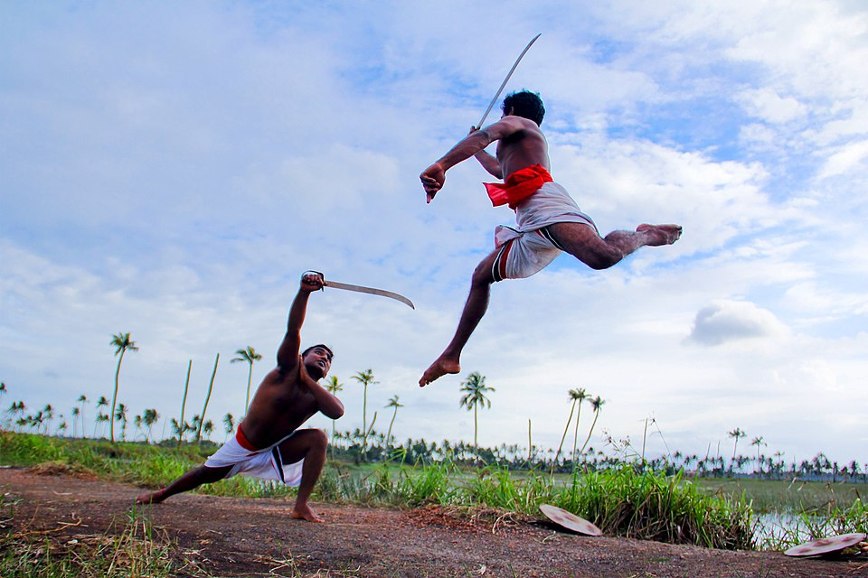
One of the ancient world's great centers of learning, attracting scholars from across Asia.
The Indian subcontinent gave rise to Hinduism, Buddhism, Jainism, and Sikhism.
For centuries, India was one of the world's earliest and most important diamond sources.
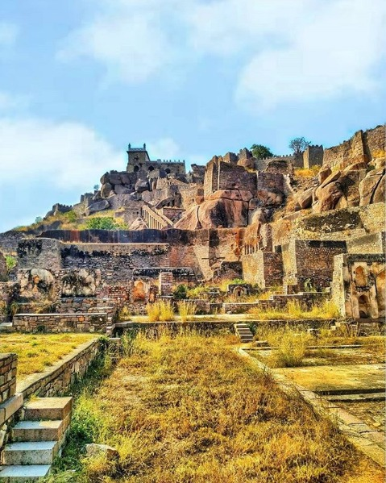
One of the world's oldest continuously inhabited cities and a major sacred center.
UNESCO recognizes it as the largest peaceful congregation of pilgrims on Earth.

Buddhist, Hindu, and Jain monuments carved into the same basalt cliffs — a symbol of coexistence.

India contributes roughly a quarter of global milk output.
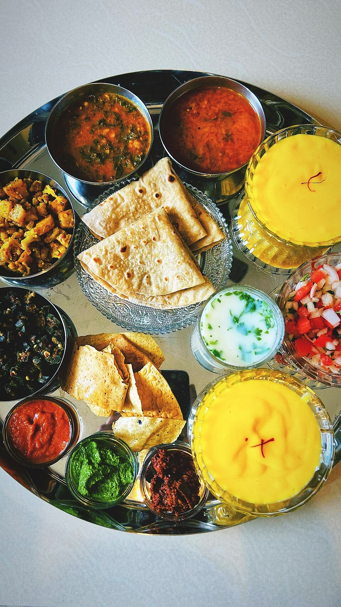
India is the world's largest mango producer.
Delhi's Khari Baoli is one of Asia's most famous spice markets.

India has one of the world's largest vegetarian populations.
At the Golden Temple, anyone can sit and eat a free meal — one of the world's most powerful traditions of service.
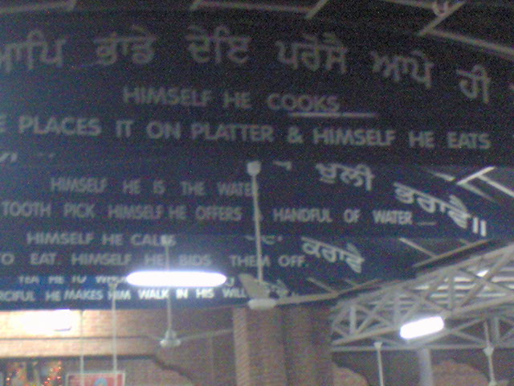
Surapala's Vrksayurveda (10th c.) described bio-pesticides, soil testing, and crop rotation — validated 80% effective by modern ICAR testing.
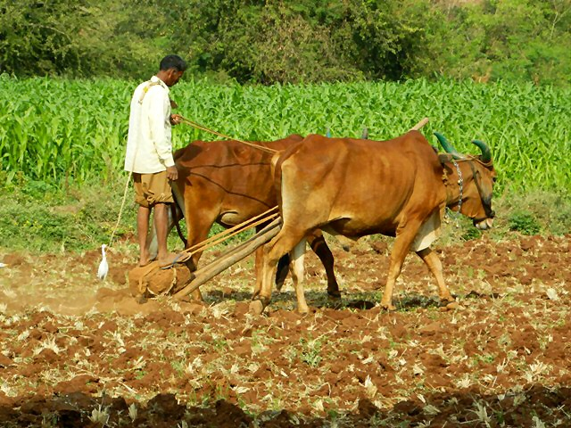
The Himalayas are still rising as the Indian plate pushes into Eurasia.
Mawsynram, Meghalaya receives over 11,000 mm of annual rainfall.

A rare saline-alkaline lake inside a meteor-impact crater in Maharashtra.
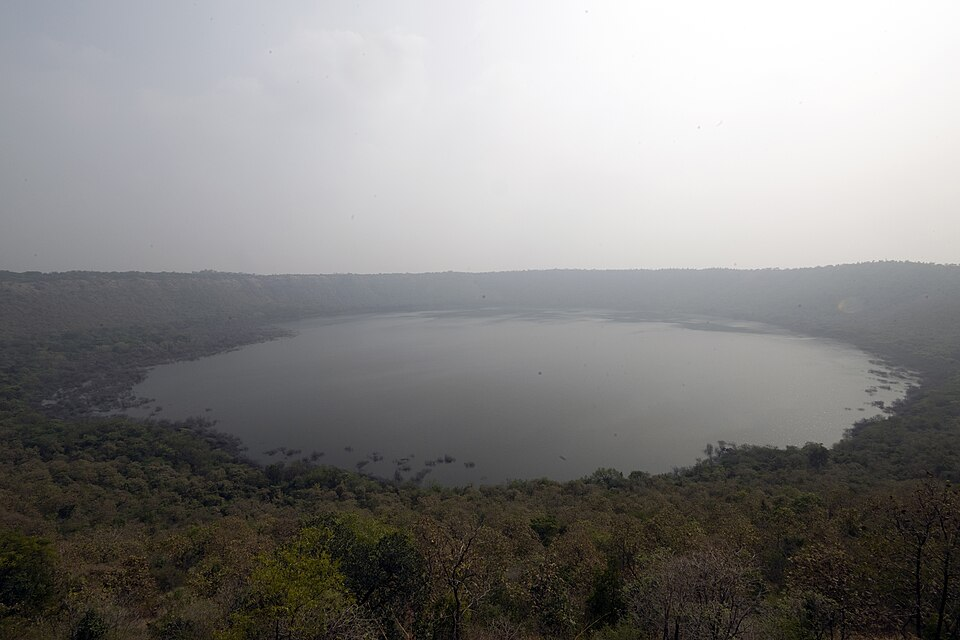
Home to the Sentinelese, an Indigenous people protected by strict non-contact rules.

The Sundarbans form the world's largest mangrove forest.
Over 2,900 km east-to-west, one single time zone — UTC+5:30.
India produces over 2,500 films annually — leading the world.

Indian cinema spans Hindi, Tamil, Telugu, Malayalam, Bengali, Kannada, Marathi and more.
The Statue of Unity — 182 meters tall.

India Post operates about 165,000 post offices — including a floating one on Dal Lake.

Completed around 1010 CE, one of India's greatest granite monuments.
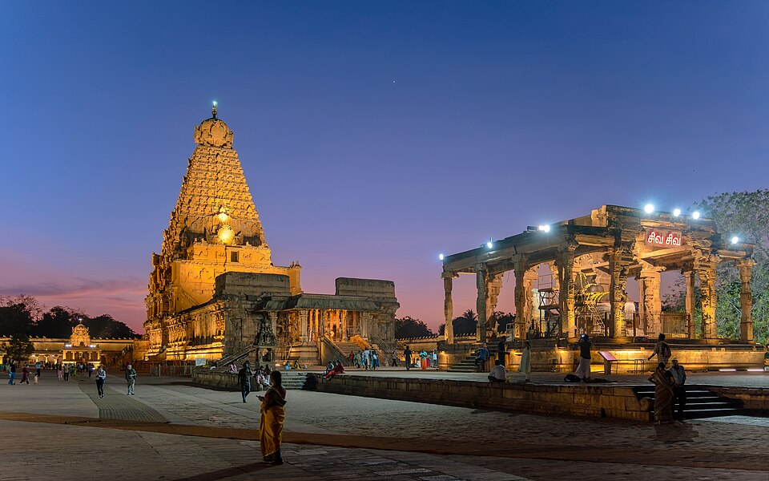
India has the world's second-largest road network.
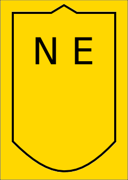
Chail, Himachal Pradesh — 2,444 meters above sea level.
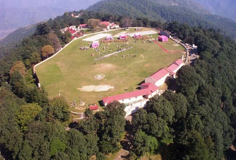
Indian households hold one of the world's largest private gold stocks — above 20,000 tonnes.

A 17th-century marble masterpiece and UNESCO World Heritage Site.
Delhi's Iron Pillar has stood virtually rust-free for over 1,600 years — a marvel of ancient Indian metallurgy.